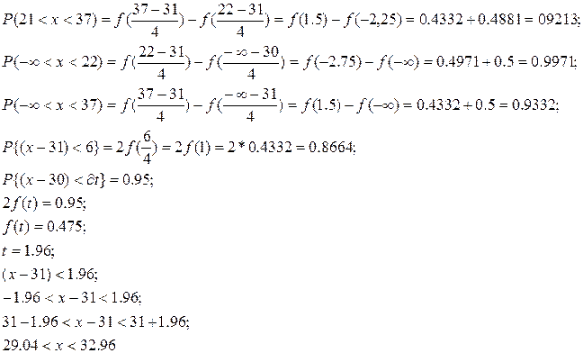

Тема: нормально розподілена випадкова величина
Мета роботи: навчитися працювати з нормально розподілена випадкова величина
Прилади і обладнання: комп’ютер, таблицю.
Розрахункові формули:
Хід роботи:
Завдання: середній діаметр стовбурів дерев на деякій ділянці – а, середнє квадратичне відхилення - . Вважаючи, що діаметр стовбура величина випадкова, розподілена нормально, визначити імовірність того, що:

Висновок: Виконуючи цю практичну роботу я навчився працювати з нормально розподіленою випадковою величиною